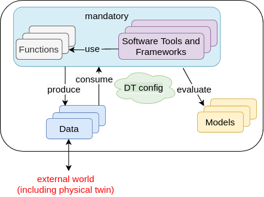

Create a Digital Twin
The first step in digital twin creation is to use the available assets in your workspace. If you have assets / files in your computer that need to be available in the DTaaS workspace, then please follow the instructions provided in library assets.
There are dependencies among the library assets. These dependencies are shown below.

A digital twin can only be created by linking the assets in a meaningful way. This relationship can be expressed using a mathematical equation:
where D denotes data, M denotes models, F denotes functions, T denotes tools, denotes DT configuration and is a symbolic notation for a digital twin itself. The expression denotes composition of DT from D,M,T and F assets. The indicates zero or one more instances of an asset and indicates one or more instances of an asset.
The DT configuration specifies the relevant assets to use, the potential parameters to be set for these assets. If a DT needs to use RabbitMQ, InfluxDB like services supported by the platform, the DT configuration needs to have access credentials for these services.
This kind of generic DT definition is based on the DT examples seen in the wild. You are at liberty to deviate from this definition of DT. The only requirement is the ability to run the DT from either commandline or desktop.
Tip
If you are stepping into the world of Digital Twins, you might not have distinct digital twin assets. You are likely to have one directory of everything in which you run your digital twin. In such a case we recommend that you upload this monolithic digital twin into digital_twin/your_digital_twin_name directory.
Example
The Examples repository contains a co-simulation setup for mass spring damper. This example illustrates the potential of using co-simulation for digital twins.
The file system contents for this example are:
The workspace/data/mass-spring-damper/ contains input and
output data for the mass-spring-damper digital twin.
The two FMU models needed for this digital twin are in
models/ directory.
The co-simulation digital twin needs Maestro co-simulation
orchestrator. Since this is a reusable asset for all
the co-simulation based DTs, the tool has been placed in
common/tools/ directory.
The actual digital twin configuration is specified in
digital twins/mass-spring-damper directory. The co-simulation configuration
is specified in two json files, namely cosim.json and time.json.
A small explanation of digital twin for its users can be placed in
digital twins/mass-spring-damper/README.md.
The launch program for this digital twin is in
digital twins/mass-spring-damper/lifecycle/execute. This launch program runs
the co-simulation digital twin. The co-simulation runs till completion and
then ends. The programs in digital twins/mass-spring-damper/lifecycle are
responsible for lifecycle management of this digital twin.
The lifecycle page provides more explanation on these programs.
Execution of a Digital Twin
A frequent question arises on the run time characteristics of a digital twin. The natural intuition is to say that a digital twin must operate as long as its physical twin is in operation. If a digital twin runs for a finite time and then ends, can it be called a digital twin? The answer is a resounding YES. The Industry 4.0 usecases seen among SMEs have digital twins that run for a finite time. These digital twins are often run at the discretion of the user.
You can run this digital twin by,
- Go to Workbench tools page of the DTaaS website and open VNC Desktop. This opens a new tab in your browser
- A page with VNC Desktop and a connect button comes up. Click on Connect. You are now connected to the Linux Desktop of your workspace.
- Open a Terminal (black rectangular icon in the top left region of your tab) and type the following commands.
-
Download the example files by following the instructions given on examples overview.
-
Go to the digital twin directory and run
The last command executes the mass-spring-damper digital twin and stores
the co-simulation output in data/mass-spring-damper/output.